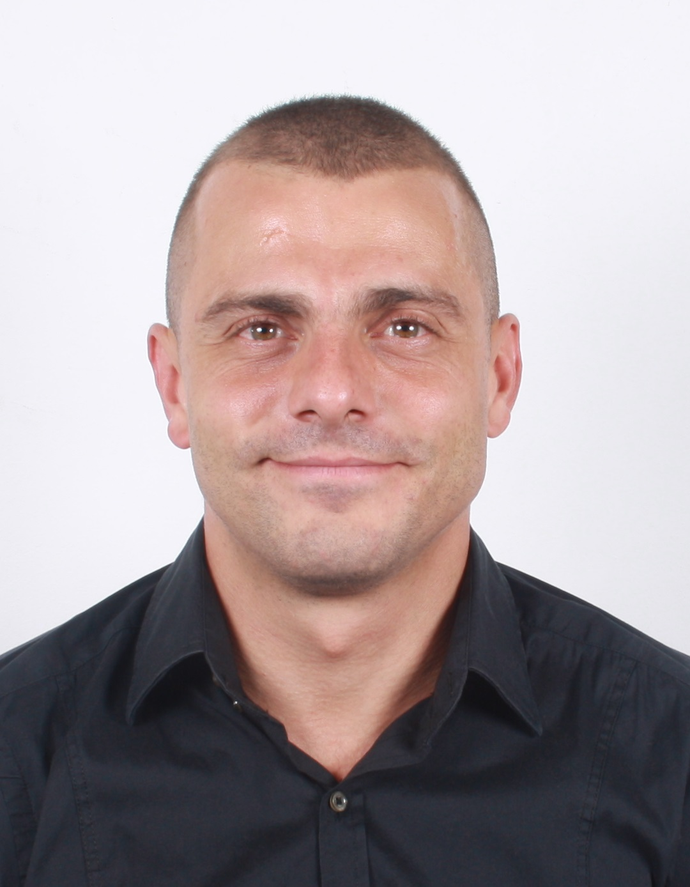

Средно образование завършено в ПЧГ (Професионална Частна Гимназия "Еиков Свят") с интензивно изучаване на немски език. Завършил висше образование в Националната Спортна Академия "Васил Левски" с първа специалност "Спортен Мениджмънт" и втора специалност "Спортна Журналистика". Завършил успешно "Водни спортове" и "Зимни спортове". Тренирал съм професионално 9 години футбол в "ПФК ЦСКА" и 7 години професионално ски-слалом на "Витоша". Завършил картинг школата на Момчил Манчев "Ставам пилот". Двукратен национален шампион в студентския шампионат по картинг за България. Завърших "Б2" ниво по английски език и "Б2" по немски език в езикова школа ИЧС към СУ "Климент Охридстки" с приложени дипломи. Успешно завършил курс по AutoCAD 2D в школата на Рилка Славкова.Няколко роли в известни американски ТВ продукции в България и Испания. Доста зарибен на тема авто-детайлинг, колоездене стриит-стил, футбол, картинг, ски и т.н. Пристрастен към всякакъв вид спорт, коли, мотори, музика и филми.
"ОБОЖАВАМ животните и се гордея с моите два котарака и немска овчарка!!! Винаги съм имал животни и просто не мога без тях!!!"
От курса по HTML/CSS/JS очаквам да придобия фундаментални познания по следните езици и много се надявам да си намеря начална работа като Junior Developer или просто да си намеря стаж. Това ми е приоритет! :) Също така много искам да обменя информация с колегите и да се уча от тях, както и най-вече от перфектната лекторка Ива Попова!
Бих желал да създам свой УЕБ сайт на базата на наученото! По-точно желая да създам УЕБ сайт на приятел, който има свой бизнес! :)
Записах курс по Front-End Web Developement (вече мога да правя разлика между front-end developer, back-end developer и web-designer) в Progressbg.net понеже е една от супер малкото фирми, които предлагат присъствено обучение! Мои приятели ги препоръчаха и им се доверих и съм много доволен!